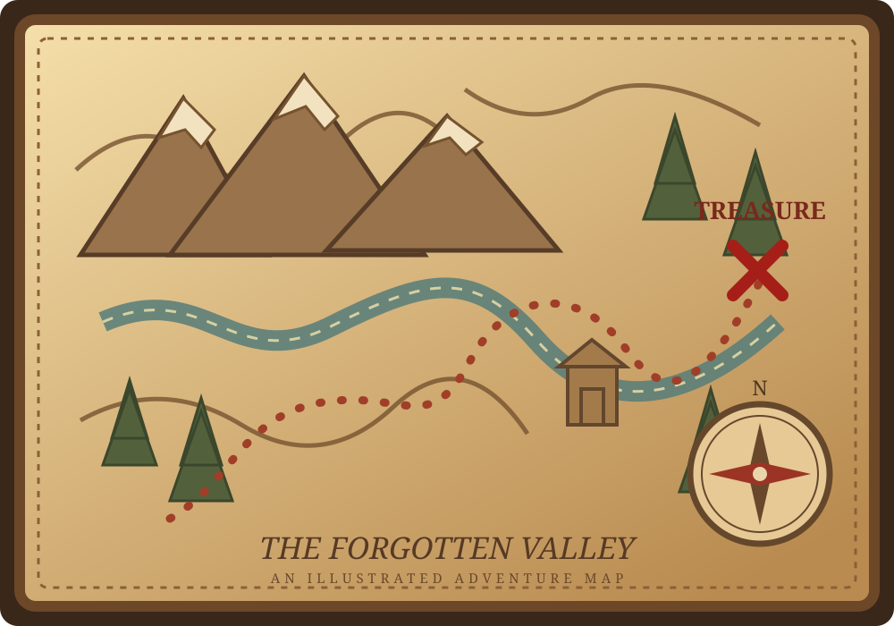

MAP 001 · ILLUSTRATED ADVENTURE
The Forgotten Valley
An old-fashioned treasure map showing a winding trail through mountains, woodland, a river and forgotten ruins. This is an imaginative map, created for adventure and storytelling.
EXPLORE THIS MAP →